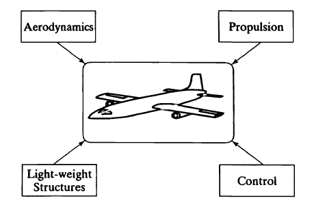
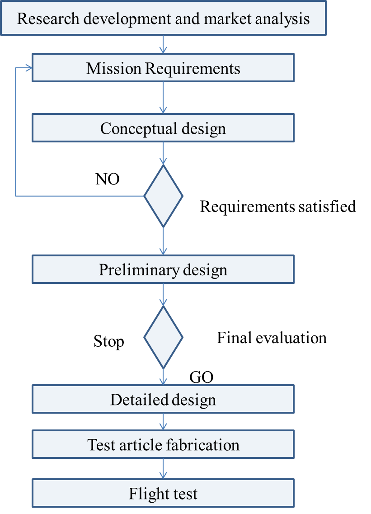

CONCEPTUAL AIRCRAFT DESIGN
Design process
Design is the activity you carry out to achive a specific goal. It is not an one time process, it is iterative
Particularly an aircraft design involves main focus on the mission requirement. It is to be designed so as to meet the desired performance aspect for a particular mission. In this design process an important parameter is "Compromise/Trade off".
Because for example a long range highly stable aircrafts are very poor in maneuverability. In the same way a high wing loading aircarft cannot give you a minimum drag.
Aircraft design process is all about optimizing all the performance aspects with a higher focus to the mission specific parameters
The major areas in aircraft design includes
- Better Aerodynamic design so as to reduce drag
- Light weight stuctures
- Appropraite powerplant selection as per the mission
- Flight contol system design
- Payload characteristics
- Range and Endurance
- Take-off and Landing distance
- Rate of climb
- Cruise altitude
- Turn radius and turn rate
Flow chart
It starts by identifying a need or capability for a new aircraft that is brought about by
- A perceived market
- Technological advances made through research and development